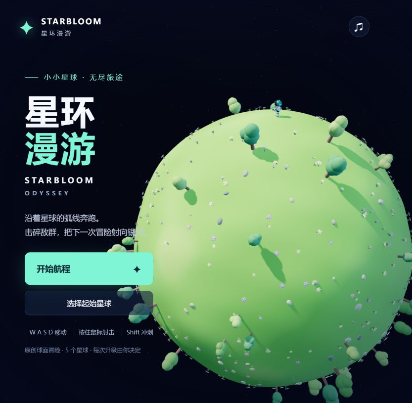

AI 辅助开发的独立 Web 游戏合集 · 点击卡片直接开玩

沿球面奔跑的 3D 射击冒险 · 五种小星球与十五波战斗 · 随机强化、彗星冲刺和星际跳跃 · 键鼠 / 触屏 · Three.js 零构建
🎬 星环漫游 · 实机视频与博文中文旁白与字幕 · 五种星球的实际游戏画面 · 移动、射击、强化选择与飞行转换 · 试玩链接、截图和源码说明
✍️ 一笔，如何成为一个数字77 秒手写数字识别科普动画 · 0–9 手写笔迹、像素、卷积与三维特征层 · 同步讲解和实际公式 · 暂停、分步、拖动进度、调速和全屏 · SVG + Three.js · 附离线单文件版
⚡ 霓城突围中文 3D 跑酷射击 · 三位英雄与六章挑战 · 增益门、武器升级与巨型首领 · 跳跃、英雄技能与无尽模式 · 本地存档 · 键盘和手机触屏 · Three.js + WebAudio 零构建
🌱 叶间微光 Leaflight叶帽小精灵的等角像素森林冒险 · 收集 12 颗星露、返回树心祭坛 · 暗影菇追逐、无敌冲刺与眩晕 · 点击地面自动寻路 · 三格生命、暂停和重开 · 手机触屏 · 原生 JavaScript + Canvas 2D + WebAudio 零依赖
🏝️ 潮屿 TIDELANDS云海热带浮岛 · 恐龙头骨瀑布与肋骨珊瑚庭 · 木屋栈桥、棕榈林与火山 · 驾船收集 8 颗珍珠、点亮 4 处地标 · 自动寻路、昼夜、PNG 拍照与存档 · Three.js + GLSL + WebAudio 零构建
🍊 柑橘果冻 Citrus Jelly软糖柑橘树 · 枝条局部弯曲与回弹 · 28 枚悬果双向耦合 · 摇晃掉落、摘取与投掷 · 碰撞、休眠与果实再生 · 三组配色、硬度、阻尼与成熟度 · 手机横竖屏折叠面板 · 原生 WebGPU / WGSL 单文件零依赖（需支持 WebGPU）
🎲 果冻骰子 Jelly Dice1–5 枚半透明软糖骰子 · 四面体 XPBD 软体、抓拉与轻戳 · 六种糖果色、皮下点数与分层折射 · 磨砂玻璃托盘、彩色软阴影 · 掷骰结算、慢动作、晶格与合成音效 · 手机触摸 + 键盘 · 原生 WebGPU / WGSL 单文件零依赖
🎈 气球测试 The Balloon Test温暖纸质工作室 · 轻触泵气与 Gent 压力曲线 · 透光乳胶 + 独立印刷 · 轻弹与水模式 · 实时撕裂、碎片与水洼 · 同一轮 ×12 慢动作重播 · 个人最佳 · 手机横竖屏 · 单文件 Three.js + 程序化音效
🍉 果冻西瓜 Melon Jelly可抓取与拉伸的 3D 西瓜果冻 · 双指扭转 · 四面体体积软体 + 种子随动 · 红宝石果肉、浅色内皮与条纹果皮 · 厚度吸收、折射与柔和阴影 · 配色、硬度、阻尼与慢动作 · 原生 WebGPU / WGSL 单文件零依赖（需支持 WebGPU）
🌿 苔苔敲敲岛 Moss & Mallet等角 3D 森林浮岛 · 小兔矿工挥锤 · 同类连锁开采 · 蘑菇范围爆破 + 彩虹全岛消除 · 特殊砖接力 · 五关收集挑战 · 全屏游戏 HUD · 手机横竖屏 + 双指缩放 · Three.js + SVG + 原创合成音效
🌃 漫步外滩上海天际线与实时钟楼 · 309 灯点无人机「我 ♥ 上海」 · 黄浦江游船与倒影 · 昼夜雨晴切换 · 沿江自由漫步与四处观景打卡 · 原生 SVG 动态绘制
🌙 雨山湖夜游马鞍山金鹰红色双塔 · 动态湖面倒影 · 807 灯点无人机告白 · 湖岸自由漫步 · 雨天撑伞与涟漪 · 昼夜切换 · 全 SVG 绘制 · 高清截图与 MP4 成片
◈ Tilt Lab 倾斜实验室倾斜球台控制重力滚动 · 木板 / 冰面 / 毛毡各一关 · 真实纹理与随机金属陶瓷小球 · 障碍穿行和能量收集 · 终点真实落洞 · 电脑键盘与手机摇杆 · Three.js + Rapier 3D
🧱 砖块破坏者 Breakout元素级砖块自由建模 · 7 种材质独立破坏物理 · 连锁爆炸 · 顶部随机英文单词砖 · 掉落道具（多球 / 挡板伸缩 / 火球+子弹）· 连击积分 · WebAudio 合成音效 · F2 调试模式
🏙️ Low-Poly City 武器沙盒低多边形等距城市 · 点击城区进入第一人称 · 锤子/冲锋枪/狙击枪/火箭筒四种武器 · NPC 生态与循环车流 · Three.js r165 零构建离线可跑
🗡️ 塞尔达风格开放世界随机刷怪 · 武器拾取 · 营火互动 · 自动锁敌 · 鼠标瞄准 · 怪物先手硬直 · WebAudio 合成音效 · 小地图与调试面板
🏹 葫芦娃救爷爷水墨弓阵防守 · 免费精灵素材 · 技能养成 · 洞府封印 · 虚线落点预览 · 低抛物线射击 · WebAudio 合成音效 · Three.js 静态可跑
🚀 Space Rage 星域空战竖版打飞机 · 波次编队与旋转水雷 · 每 5 波多阶段 Boss · 连击倍率最高 ×8 · 强化掉落（等离子炮 / 速射 / 修甲）· 屏幕震动与死亡慢镜 · WebAudio 合成音效与动态配乐 · Three.js + KayKit 六边形无限滚动地表
🎱 3D 台球 Billiards真实比例球桌（球径 63.5mm / 台 2.375m×1.155m）· 480Hz 弹性碰撞物理 · 鼠标瞄准 + 蓄力击球 · 幽灵球落点预测 · 几何 AI 对手 · 落袋 / 库边 / 击球程序化音效 · WebAudio 全合成零素材 · Three.js r165 零构建
✏️ 手绘五子棋 Gomoku手绘纸面棋盘 · 动物/植物随机角色棋子 · 人机/双人对战 · 吃子爆炸消除 · 提示推荐和危险提醒 · 攻击按钮只赶走对方角色 · 飞机投弹破坏棋盘 · 胜利烟花和小人庆祝 · Three.js + WebAudio 零构建
🏭 汽车智慧工厂数字孪生大屏厂区五大车间三维全景 · 车间室内一镜到底进入 · 冲压 / 焊装机器人集群 + 焊花粒子 / 涂装连续输送 / 总装合装岛产线动画 · AGV 环线与跨车间物流光带 · 总览 / 经营 / 生产 / 车间 / 设备五大监控面板 + ECharts 实时联动 · 设备点选监管浮窗 · Three.js 0.160 + ECharts 零构建（CDN）
🚤 简笔画浪速赛艇 Sketch Wave Racer第三人称 3D 水上赛艇 · 手绘卡通简笔画世界 + 高质感动态水面（多层波 / 菲涅耳反射 / 泡沫 / 水花粒子） · 转速定命运起步（绿区完美弹射 / 轰过爆缸线爆缸熄火） · 3 圈 10 检查点 · 漂移蓄力 · 6 道具 + 3 AI 对手 · 飞鱼障碍 · 程序化赛道 · 中英双语 · 音效全 WebAudio 程序合成 · Three.js 0.169 + Vite 构建产物直发
⚔️ Tinker's Crossing 卡通格斗卡通中世纪 3D 清版动作 · 城堡门 / 村道 / 广场 / 木桥 / Boss 竞技场一镜到底 · 剑锤双武器三段连击 · 3 种敌人 + 三阶段 Boss · 包围圈围攻 AI 效用评分 · 可破坏场景碎块池硬上限 · 受击停顿 + 镜头震动 + 武器拖痕 · TypeScript 严格模式 + Rapier3D 物理 · 零素材全程序回退
🌊 Underwater Explorer 海底探索潜水员戴夫风格 2D/2.5D 海底探索原型 · 潜水员惯性移动与出水呼吸 · 昼夜水面、太阳/月亮/星空 · 氧气/生命 HUD · 鱼群巡游/逃离/碰撞避让 · 鱼叉瞄准、蓄力、发射与命中特效 · 海底大气泡和珊瑚遗迹装饰 · TypeScript + Vite + Three.js CDN
🏴☠️ 微缩航海星球 Pirate Planet马里奥银河式球形小星球沙盒 · 球形地表（陆地 / 海洋 / 云层 / 大气 / 星空） · Kenney Pirate Kit 全模型 · 港口城堡方形城墙 + 角楼大门 · 球面弧线航线 + 船只海战炮击 · 渡轮摆渡每次载 5 人 · 小人漫游 + 方块宠物跟随 · WebAudio 程序音效 · lil-gui 调试面板 · Three.js 0.180 + GSAP
GLB 骨骼动画状态机 · WASD 走动 / Shift 跑步 / 空格蓄力跳 + 腾空移动 · K 组合拳连段计数 · J 魔法弹道 · 43 段动画姿态分组浏览 · Three.js r185 零构建
GitHub: shfzhangjian/AI_GTA